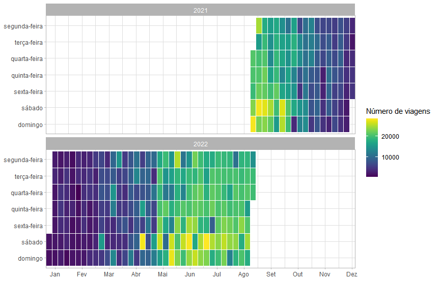
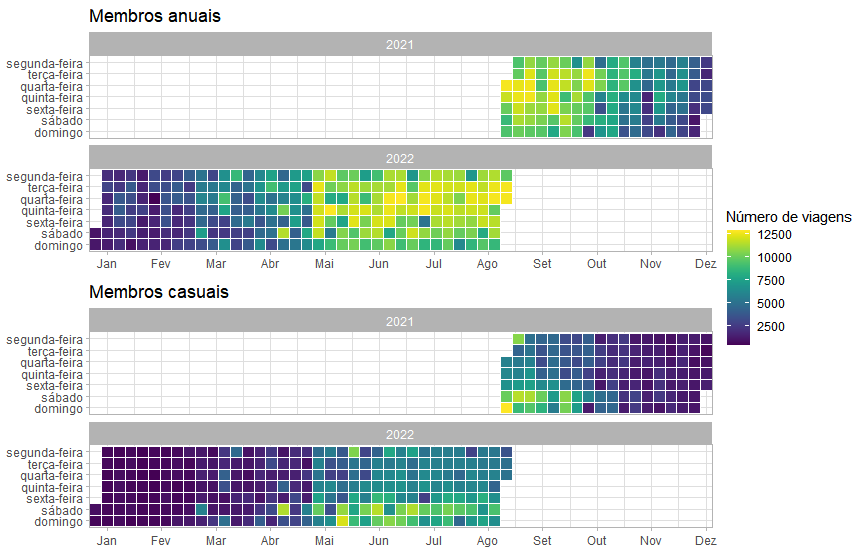
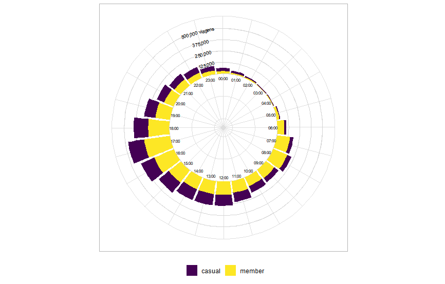

Estudo de caso Cyclistic
17/10/2022
1. Introdução
Este é um estudo de caso realizado como projeto final do curso de especialização em Análise de Dados do Google. O código fonte do projeto se encontra aqui.
A empresa ficcional Cyclistic trabalha com o serviço de bike-sharing (bicicletas compartilhadas), e está localizada em Chicago, Estados Unidos. A Cyclistic possui mais de 5.800 bicicletas rastreadas geograficamente e uma rede de mais de 690 estações. As bicicletas podem ser retiradas de uma estação e retornadas à outra no sistema, em qualquer momento.
O serviço de bike-sharing possui dois tipos de usuários: membros anuais e casuais. O diretor de marketing acredita que o futuro sucesso da empresa depende de maximizar o número de membros anuais, e para isso, pediu uma análise de como os tipos de membros diferem no uso do serviço, além de recomendações de como transformar membros casuais em membros anuais
2. Processo
Meu primeiro passo foi coletar os dados das viagens feitas durante o último ano. A Cyclistic providenciou tais dados, divididos por mês. A licensa para o uso deste dataset se encontra aqui.
Para cada mês, há entre 100.000 e 500.000 entradas, salvas em arquivos csv. Devido ao tamanho dos arquivos, eu usei a linguagem de programação R, uma ferramenta otimizada para manipular, analisar e visualisar grandes quantidades de dados, para realizar essa tarefa. A possibilidade de qualquer erro humano ou viés é praticamente nula, pois os dados foram coletados pelas próprias bicicletas. Em relação à regras de privacidade de dados, não há informações pessoais dos usuários.
As viagens com menos de 60 segundos de duração (prováveis falsos inícios ou usuários tentando re-travar a bicicleta por garantia) foram removidas. Os dados foram limpos e todos os 12 datasets foram unidos em um só, removendo elementos incompletos, resultados de testes e viagens com tempo de duração negativos, além de ordená-los por suas variáveis de data e tempo. A documentação e o código completo para esta fase da análise podem ser encontrados aqui.
O dataset limpo foi, por fim, salvo com o nome de “all_trips_cleaned”.
3. Análise
3.1 Estações mais populares
O mapa interativo demonstra que as estações próximas à costa e ao píer naval são as mais populares, sendo a estação Streeter Dr & Grand Ave a mais popular delas, com 64.998 viagens. Pode-se deduzir, a partir de tais observações, que a maioria dos usuários usa o serviço para lazer.
É possível observar, também, que as estações mais ao sul do mapa são as menos populares, mesmo cobrindo boa parte da área. Isso indica que apenas uma pequena parte dos membros utilizam o serviço em regiões mais residenciais, enquanto a grande maioria dos membros se concentram em regiões centrais e turísticas da cidade.
3.2 Época mais popular do ano

O mapa de calor acima apresenta o número de viagens feitas a cada dia da semana, ao longo de todo o período analisado, e mostra que os meses cuja estação do ano era o verão no hemisfério norte (onde se encontra a cidade de Chicago) foram os mais populares, especialmente seus finais de semana, ressaltando o ponto de que a maioria dos usuários usa o serviço para lazer.

Separando o mapa de calor por membros anuais e casuais, é possível perceber o uso mais expressivo do serviço por parte dos primeiros, particularmente em dias úteis da semana, enquanto casuais concentram seu uso em finais de semana dos meses de verão.
Tais diferenças observadas indicam que membros anuais tendem a utilizar o serviço mais para trabalho do que para lazer, enquanto que para casuais, essa tendência se inverte.
3.3 Hora mais popular do dia

Este gráfico circular mostra que o horário mais popular do dia, tanto para membros anuais quanto casuais, é às 17:00. Mais além, os picos de uso dos membros anuais serem horários típicos de uma jornada de trabalho comum reforça a teoria de que os mesmos utilizam o serviço para irem ao trabalho.
Membros casuais, por sua vez, costumam utilizar o serviço mais durante os períodos da tarde e da noite, o que não só reforça a teoria de que estes usam o serviço mais para lazer, mas também como alternativa de transporte.
Por fim, mais um fator importante a ser analisado é a média de duração das viagens feitas pelos membros. Membros anuais possuem uma média de aproximadamente 13 minutos de duração por viagem, enquanto membros casuais possuem uma de aproximadamente 29 minutos. Estas médias, mais uma vez, reforçam as teorias anteriores.
4. Recomendações
Para transformar membros casuais em membros anuais, eu recomendo:
1. Fazer uma campanha de marketing focada em mostrar o serviço Cyclistic sendo usado no dia-a-dia
Como observado na análise anterior, ambos os tipos de membros utilizam a Cyclistic como alternativa de transporte. Uma campanha focada em ressaltar não só isso, mas também os benefícios de se ter uma filiação anual, pode ajudar a converter usuários casuais. Indo mais além, tal estratégia tem o potencial de mudar a opinião de que a Cyclistic é apenas um serviço turístico, mostrando como ela pode se encaixar perfeitamente na rotina dos moradores da cidade.
2. Concentrar e investir mais em anúncios e descontos durante finais de semana
As análises feitas levaram à conclusão de que, durante finais de semana, muitas pessoas usam o serviço casualmente. Tendo isso em vista, um foco maior em tal período tem mais potencial de transformar essas pessoas em membros, ainda mais se aliado à estratégia anterior.
Análise do mercado de Dados brasileiro (em desenvolvimento)
01/11/2022
1. Introdução
Este é um projeto pessoal, que comecei com o intuito de entender melhor as exigências para se entrar no mercado de dados no Brasil. O código fonte do projeto se encontra aqui.
Depois de observar as muitas dúvidas de quem deseja conseguir um emprego na área, além de tê-las eu mesmo, decidi fazer uma análise geral das vagas oferecidas pelas empresas no Linkedin.
Eu pretendo continuar atualizando e agregando informações neste projeto ao longo dos anos, para sempre estar eu mesmo atualizado sobre o mercado, e ajudar ainda mais quem quer que seja que acesse esta análise.
2. Processo
O primeiro passo foi coletar os dados necessários. Para isso, criei um web scraper que coletou os links de todas as 986 vagas do Linkedin oferecidas na área de data science no Brasil recentemente (01/11/2022). Destes links, extraí todas as informações relevantes: título, nome da empresa, local, método de trabalho (remoto, presencial ou híbrido), data da publicação, jornada de trabalho (tempo integral, meio período e contrato) e descrição. Devido a algumas vagas não possuírem todas essas informações, das 986, apenas 828 foram armazenadas em um dataframe com o nome de "job_offers". O código completo para esta fase pode ser encontrado aqui.
Com isso, o próximo passo foi limpar e tratar devidamente esses dados. Observando o dataset, percebi que muitas vagas de outras áreas da tecnologia foram erroneamente incluídas no filtro "data science" no Linkedin, portanto, usei uma série de palavras chaves para filtrar todas as vagas que realmente eram da área. O número total de entradas foi de 828 pra 624.
Tendo enfim um dataset limpo, pude inicar a fase de tratamento. Comecei por simplificar os títulos de cada vaga, sintetizando-os nas categorias: Analista BI, Analista de Dados, Engenheiro de Dados e Cientista de Dados, e para isso utilizei regex em python, além de mais uma vez palavras chave. Após isso, usei esta mesma abordagem para extrair as informações mais relevantes das descrições de cada vaga, como o nível de educação formal e os conhecimento sobre tecnologias requeridos ou preferidos. Por fim, simplifiquei da mesma maneira que os títulos as jornadas de trabalho, retirei as colunas cujas informações já não eram mais necessárias e salvei o dataset limpo sob o nome de "clean_job_offers". O código completo para esta fase da análise pode ser encontrado aqui.
3. Análise
Após coletar, limpar e tratar os dados, utilizei o PowerBI para contruir um dashboard com as informações obtidas.